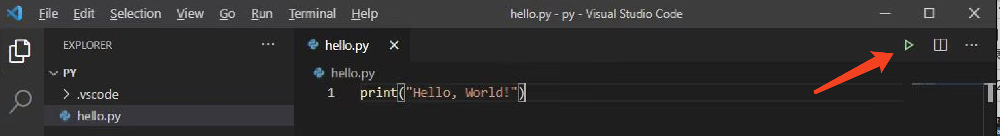
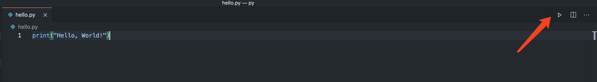

Python 开发环境搭建
r# Windows 用户请看这
Python 安装 (Windows)
首先我们需要安装 Python，访问 Python 官网，选择 Stable Releases 下 Python 3.8.8 中的 Windows installer 下载，32 位还是 64 位根据个人情况选择哦。下载完毕后直接双击安装就好了，界面如下：

记得勾选最下方的选项 Add Python 3.8 to PATH，可以省很多事儿。 然后一路 next 点点点，Python 就安装好了。
代码编辑神器 VS Code
接下来我们讲介绍本次课程推荐使用的代码编辑器 — VS Code。VS Code 是一个轻量的免费跨平台代码编辑器。如果你还未安装 VS Code，可通过其官网，直接下载安装。
安装 VS Code 的过程也是一路点点点，记得也要勾选 添加到PATH 这一项。

然后打开 VS Code，我们点击最左侧选项栏的扩展页，在搜索栏中搜索 Python，第一个就是我们所需要的插件，点击 install 即可安装～

现在，我们新建一个文件夹，并在 VS Code 中打开它，现在，我们通过 ctrl + N 来新建一个文件，并按下 ctrl + S 为 hello.py，现在 VS Code 识别到了我们正在编辑一个 Python 文件，窗口的左下角会出现我们所使用的 Python 解释器版本号。

现在，我们尝试在 hello.py 文件中输入：
print("Hello, World!")
然后点一下右上角的绿色三角运行按钮。

你应该可以看到终端中输出的 Hello World!，现在， 我们的环境配置就算告一断落啦。

mac OS 用户请看这
Python 安装 (Windows)
本文主要介绍三种安装 Python 的方法：
-
访问 Python 官网，选择 Stable Releases 下的 Python 3.8.x installer 下载安装。
-
通过
Homebrew安装：
如果你的电脑上已经安装了
Homebrew，则推荐使用此方式安装 ；或者虽然还未安装Homebrew，但你是一名计算机系的学生，我们建议你了解一下Homebrew并使用此方式安装 Python。
在终端下输入以下命令：
brew install python3
由于网络环境因素，安装时间可能过长，可以考虑通过为 Homebrew 换源或者挂梯子等方式加速。
安装完成后，终端应显示如下内容（具体版本号可能有轻微不同，并不影响后续课程）。
Python has been installed as
/usr/local/opt/python@3.8/bin/python3
You can install Python packages with
/usr/local/opt/python@3.8/bin/pip3 install <package>
They will install into the site-package directory
/usr/local/opt/python@3.8/Frameworks/Python.framework/Versions/3.8/lib/python3.8/site-packages
See: https://docs.brew.sh/Homebrew-and-Python
==> Summary
🍺 /usr/local/Cellar/python@3.8/3.8.3_1: 4,125 files, 63MB
现在试试在终端中输入：
python3 --version
你应该可以看到（具体版本号可能有轻微不同，并不影响后续课程）：
Python 3.8.3
- 通过安装 Anaconda 来安装 Python。
对于本课程来说，Anaconda 有些稍显臃肿，我们因此不推荐使用此方法安装 Python。如果你对数据科学非常感兴趣，计算机背景知识良好，也可以选择使用此方式安装 Python。
进入 Anaconda 官网下载页面，选择一个 Installer 下载（为了方便，我们推荐选择第一个 Graphical Installer）。

如果下载速度不理想，可以通过 清华源 下载。点进页面后，拉到最下方，选择 Anaconda3-5.3.1-MacOSX-x86_64.pkg 这个包，下载即可。此处还有 TUNA 提供的 Anaconda 镜像使用帮助。
安装过程中，可以自行选择是否要一起打包安装 PyCharm，本课程中主要使用的编辑器为 Sublime Text 与 VS Code。
现在试试在终端中输入：
conda --version
你应该可以看到（具体版本号可能有轻微不同，并不影响后续课程）：
conda 4.7.12
接下来我们讲介绍本次课程推荐使用的代码编辑器 — VS Code。
代码编辑神器 VS Code
VS Code 是一个轻量的免费跨平台代码编辑器。如果你还未安装 VS Code，可通过 其官网，直接下载安装。
-
安装完毕后，选择最左侧一栏中的扩展图标（1.）进入扩展商店，在搜索栏（2.）中输入 Python，点击安装（3.）来安装 VS Code 为 Python 提供的插件。

-
安装插件完毕后，我们先创建一个文件夹，并且通过 VS Code 打开这个文件夹。之后按下
Command+N，创建一个新文件，并且按下Command+S，把它保存为hello.py。
现在，VS Code 窗口的左下角，会出现你目前使用的 Python 环境，因为 mac OS 中自带了 Python 2.7，我们需要把它手动切换成我们刚刚安装的 Python 3。

我们点击它，则可以选择其他 Python 解释器，因为笔者的 Mac 中有多个 Python 环境，所以这里的选项多一点，选择你刚刚安装的那个版本就好。

- 现在，我们尝试在
hello.py文件中输入：
python
print("Hello, World!")
然后点一下右上角的绿色三角运行按钮。

你应该可以看到编辑器下部分的终端中，成功打印了：
▶ python3 /Users/xiuxiu/Desktop/py/hello.py
Hello, World!
(base)
至此，一个基本的 Python 开发环境已经配置好啦，我们在课程中也会慢慢介绍可能使用到的其他扩展～